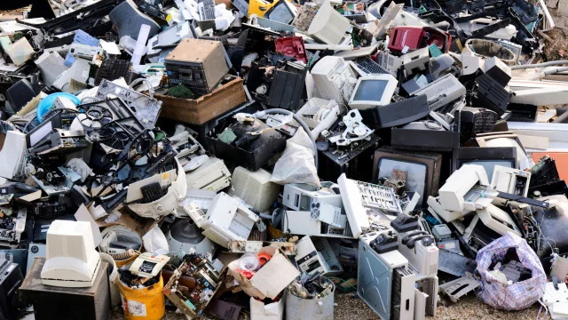

♻️ Residuos Informáticos

Los residuos informáticos son todos los dispositivos electrónicos como ordenadores, móviles, tablets o impresoras que han dejado de usarse y que necesitan ser reciclados correctamente. Su manejo adecuado es crucial para proteger el medio ambiente y la salud humana.
Problema ambiental
Muchos dispositivos contienen materiales peligrosos como plomo, mercurio, cadmio, arsénico y retardantes de llama bromados. Si no se gestionan adecuadamente, estos materiales pueden filtrarse al suelo, ríos y acuíferos, afectando ecosistemas y la salud de las personas.
Se estima que cada año se generan millones de toneladas de residuos electrónicos en todo el mundo, convirtiéndose en uno de los flujos de residuos que más crecen. Por eso es importante crear conciencia sobre el reciclaje y la informática sostenible.
Materiales peligrosos
| Material | Riesgo |
|---|---|
| Plomo | Contamina el suelo y afecta el sistema nervioso |
| Mercurio | Daña los riñones y el sistema nervioso |
| Cadmio | Muy tóxico para el agua y los organismos acuáticos |
| Arsénico | Altamente tóxico y cancerígeno |
| Retardantes de llama | Persisten en el medio ambiente y pueden afectar hormonas |
Impacto visual y real
Los vertederos de residuos electrónicos muestran la magnitud del problema. Muchos equipos contienen plásticos, metales y baterías que pueden tardar décadas en descomponerse. La correcta gestión y reciclaje de estos residuos es fundamental para reducir la contaminación y recuperar materiales valiosos.
Soluciones
- Reciclar dispositivos electrónicos en puntos autorizados.
- Reparar equipos en lugar de reemplazarlos.
- Donar equipos que todavía funcionan a escuelas u organizaciones.
- Comprar productos más duraderos y con certificación ambiental.
- Reducir el consumo innecesario de tecnología.
- Fomentar la informática ecológica en empresas y hogares.